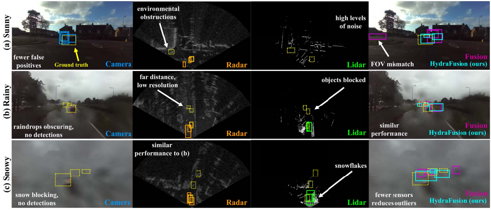
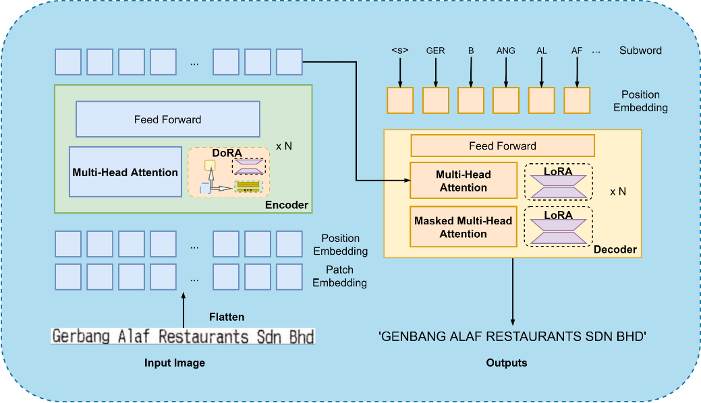
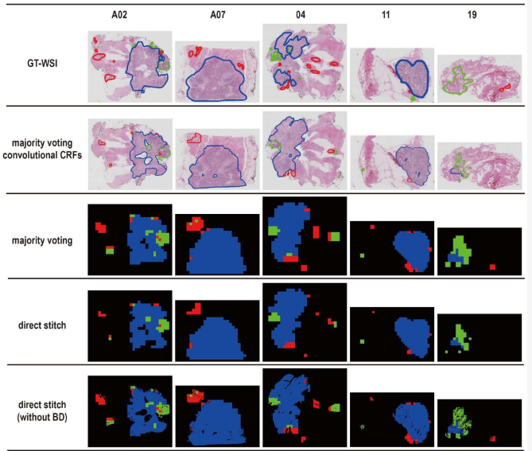
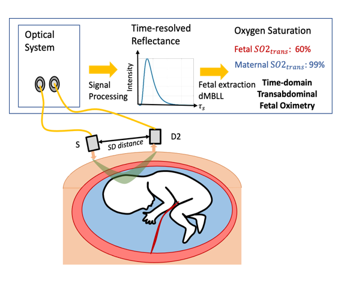
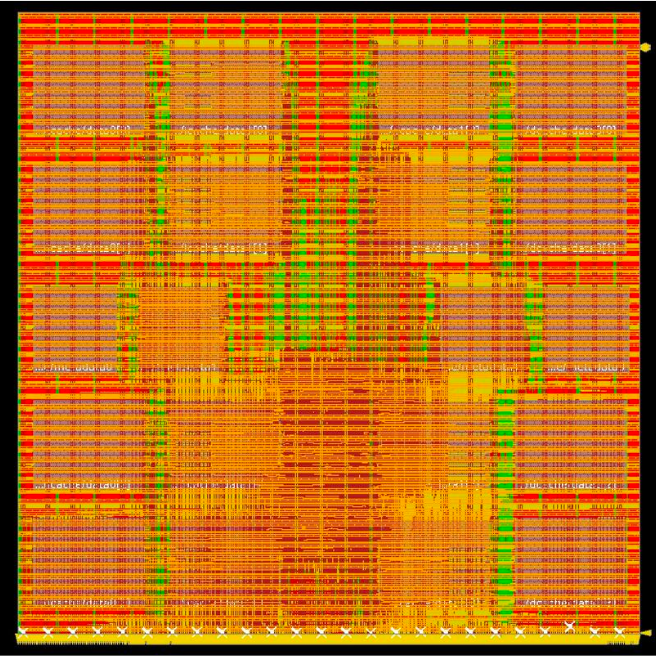
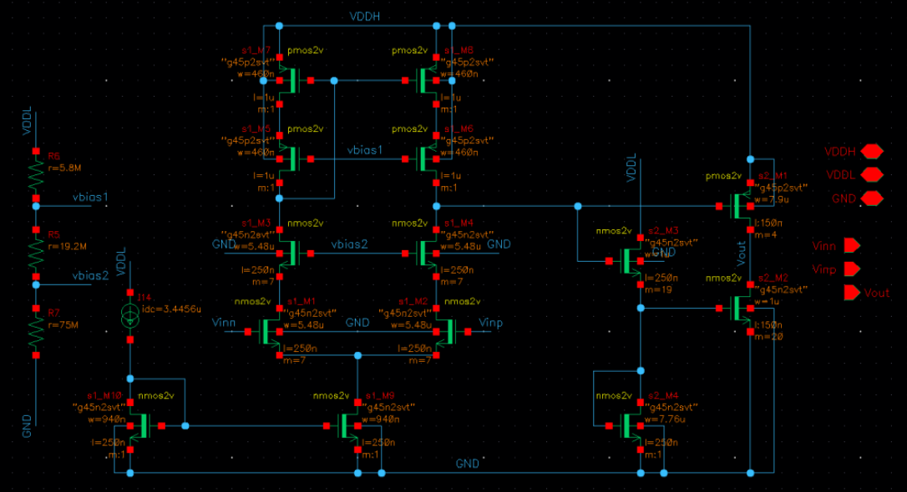
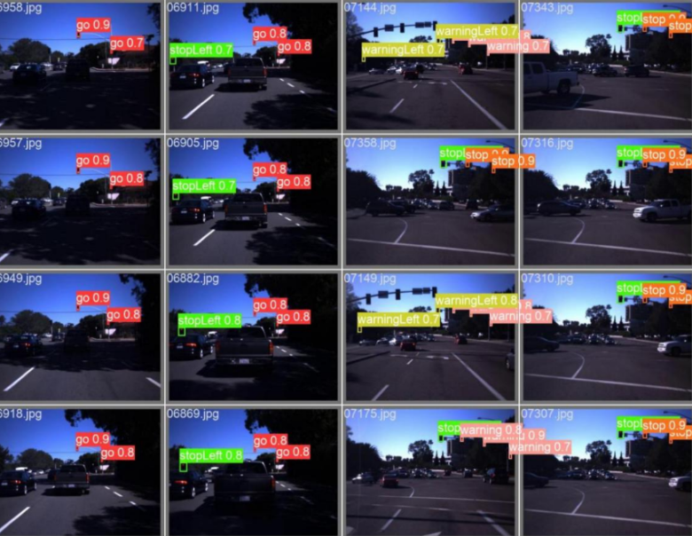
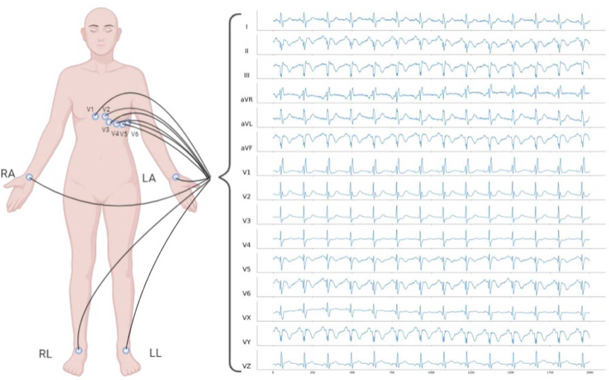

|
I am currently a junior in Honyi Honor College of Wuhan University, majoring in Microelectronics Science and Engineering. I have a certain understanding of digital/analog circuits and computer architecture. My current main research direction is the improvement of ML/AI in image processing and model architecture. At Wuhan University, I mainly participated in research in the Lei lab under the guidance of Prof. Cheng Lei. I am also honored to work as a research intern with Prof. Weijian Yang at Yang's lab at UC Davis and Prof. Mohammad Abdullah Al Faruque at AICPS lab at UC Irvine. Email / Google Scholar / Linkedin / CV / Github |
{kind=link}
|
|
- [05/2024] - I will join AICPS at UC Irvine as a research intern, during summer 2024.
- [05/2024] - I was awarded the Innova International Exchange Scholarship, thanks to Dr. Charles Huang and Charles Huang Foundation!
- [01/2024] - I will be visiting Berkeley EECS for one semester. Relevant courses:EECS151 & EECS151LA, EE140, MSE243.
- [10/2023] - I was awarded the Innova Excellence Scholarship, thanks to Dr. Charles Huang and Charles Huang Foundation!
- [07/2023] - I will join Yang Research Lab at UC Davis as a research intern, during summer 2023.
- [05/2023] - I will join Laser Imaging Lab of Wuhan University and my research focus on ultrasound image segmentation.
|
My research focuses on ML in image processing and EDA. |
|  |
Computer Vision Multimodal LLM Our main work is how to use multi-modal large models to improve the algorithm fusion of weather anomalies in autonomous driving mode. |
|  |
Multimodal LLM We explored the optimization of various full-parameter fine-tuning methods such as LoRA in LLM. For OCR, a hybrid visual-text model, corresponding to the Transformer architecture, DoRA and LoRA have good improvement effects on the visual encoder and text decoder respectively. |
|  |
Medical Image Multimodal LLM We leveraged the rich semantic segmentation information of SAM and applied its fine-grained attention capability to the feature extraction module of Transformer, achieving SOTA IoU scores in ultrasound image segmentation. |
|  |
Physical Model Monte Carlo simulation data is used to improve the model and design the algorithm for the SpO2 measurement process, and finally the reverse judgment process of physiological parameters is realized. |
|
Individual or Collaborative Projects |
|  |
CPU Desgin In the first phase (front-end), I design and implement a 3-stage RISC-V processor in Verilog, and run simulations to test for functionality. Then in the second phase (back-end), I implement front-end design in the SKY130 PDK using the VLSI tools. |
|  |
Circuit Design To use a series resistance of 400 Ohms and a capacitance of 60 pF to design the amplifier to the specifications. |
|  |
Computer Vision FPGA A multi-channel video acquisition and acceleration system was implemented through Unisoc FPGA. It includes video input collection of two different transmission methods, HDMI/PCIE, onboard DDR video frame buffer, video output of HDMI/PCIE two methods, video splicing, scaling and other functions. |
|  |
Deep Leanring For the attempt of deep learning method for ECG classification, the construction of multi-layer neural network and the parameter grid search of effective tool XGBoost. |
|
|
- Research Intern, UC Irvine, Summer 2024.
- Visiting Student, UC Berkeley, Spring 2024.
- Research Intern, UC Davis, 2023-2024.
- Research Assistant, WHU, 2022-2024.
|
|
- Innova International Exchange Scholarship, WHU, 2024.
- Innova Excellence Scholarship, WHU (Top 3%), 2023.
- Academic Excellence Scholarship, Hongyi Honor College (Top 5%), 2022.
- First-Class Scholarship, WHU (Top 5%), 2022 & 2023.
|
|
- National Invention Patent: Energy-saving calculation method(CN116085952)

|
Stolen from Jon Barron |